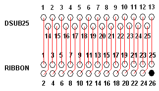

J2 - PCB - Data Acquisition (DAQC)
- Vacuum sensor signals from the Vacuum / Pressure Sensor Interface PCB run through J2.
- CABLE, RIBBON, PARALLEL PORT connects J2 to J16 at the top of the upper left card cage.
- CABLE, INTERFACE, VACUUM, DSUB connects J16 to J1 on the Vacuum / Pressure Sensor I/F PCB.
- Vacuum / Pressure Sensor Interface PCB is located at the right rear of the fluids drawer near the vacuum pumps.
- All ground pins on the J2 connector are tied together on the Vacuum / Pressure Sensor Interface PCB.
- The pin number assignments going from J2 on the DAQC PCB to J1 on the Vacuum / Pressure Interface PCB are interleaved due to the way pins are numbered on a ribbon cable (1, 3, 5, 7, 9) and a D-sub connector cable (1, 2, 3, 4).
- The signal identification labels shown on the schematic drawing for J2 are not correct. Use the identification from the I/F PCB J1.
- The vacuum / pressure sensor output is typically 0V in standby, -0.4 V at 30 mm Hg (typical with vacuum and peristaltic pumps running), -2 V at 150 mm Hg (aspirate probe wash), and -4 V at 300 mm Hg (tubing clamped, vacuum pump running).
| J2 | Description | Signal / Voltage | To / From / Notes |
|---|---|---|---|
|
1 |
+12V_IO |
+12V |
To Vacuum / Pressure Sensor Interface PCB J1-1. +12 V power from CPU backplane J3-B9 through fuse F1. |
|
2 |
-12VFILT |
–12V |
To Vacuum / Pressure Sensor Interface PCB J1-14. -12V power from CPU backplane J3-B7. |
|
3 |
N/C |
0V |
To Vacuum / Pressure Sensor Interface PCB J1-2. Not connected at either end of cable. |
|
4 |
AGND |
0V |
To Vacuum / Pressure Sensor Interface PCB J1-15. Analog ground. |
|
5 |
DYNAMIC0+ |
–0.2V –1.75V @ 150 mm Hg |
From Vacuum / Pressure Sensor Interface PCB J1-3. To DAQC PCB U15-19. (PRESS0+) Aspirate Vac Collar. TestAnalog CH00. |
|
6 |
DYNAMIC0– |
0V |
From Vacuum / Pressure Sensor Interface PCB J1-16. To DAQC PCB U15-11. Signal ground. Tied to AGND at J1 on Vacuum / Pressure Sensor Interface PCB. |
|
7 |
DYNAMIC1+ |
-0.2V |
From Vacuum / Pressure Sensor Interface PCB J1-4. To DAQC PCB U15-20. (PRESS1+) Sample wash tower vacuum. TestAnalog CH12. |
|
8 |
DYNAMIC1– |
0V |
From Vacuum / Pressure Sensor Interface PCB J1-17. To DAQC PCB U15-10. Signal ground. Tied to AGND at J1 on Vacuum / Pressure Sensor Interface PCB. |
|
9 |
DYNAMIC2+ |
-0.2V |
From Vacuum / Pressure Sensor Interface PCB J1-5. To DAQC PCB U15-21. (PRESS2+) Reagent wash tower 4 vacuum. TestAnalog CH02. |
|
10 |
DYNAMIC2– |
0V |
From Vacuum / Pressure Sensor Interface PCB J1-18. To DAQC PCB U15-9. Signal ground. Tied to AGND at J1 on Vacuum / Pressure Sensor Interface PCB. |
|
11 |
DYNAMIC3+ |
-0.2V |
From Vacuum / Pressure Sensor Interface PCB J1-6. To U15-22. (PRESS3+). Reagent wash tower 3 vacuum. TestAnalog CH03. |
|
12 |
DYNAMIC3– |
0V |
From Vacuum / Pressure Sensor Interface PCB J1-19. To DAQC PCB U15-8. Signal ground. Tied to AGND at J1 on Vacuum / Pressure Sensor Interface PCB. |
|
13 |
DYNAMIC4+ |
-0.2V |
From Vacuum / Pressure Sensor Interface PCB J1-7. To DAQC PCB U15-23 (PRESS4+). Reagent wash tower 2 vacuum. TestAnalog CH06. |
|
14 |
DYNAMIC4– |
0V |
From Vacuum / Pressure Sensor Interface PCB J1-20. To DAQC PCB U15-7. Signal ground. Tied to AGND at J1 on vacuum / Pressure Sensor Interface PCB. |
|
15 |
DYNAMIC5+ |
-0.2V |
From Vacuum / Pressure Sensor Interface PCB J1-8. To DAQC PCB U15-24 (PRESS5+). Reagent wash tower 1 vacuum. TestAnalog CH05. |
|
16 |
DYNAMIC5– |
0V |
From Vacuum / Pressure Sensor Interface PCB J1-21. To DAQC PCB U15-6. Signal ground. Tied to AGND at J1 on Vacuum / Pressure Sensor Interface PCB. |
|
17 |
DYNAMIC6+ |
0V |
From Vacuum / Pressure Sensor Interface PCB J1-9. To DAQC PCB U15-25 (PRESS6+). Spare. Not used. |
|
18 |
DYNAMIC6– |
0V |
From Vacuum / Pressure Sensor Interface PCB J1-22. To DAQC PCB U15-5. Signal ground. Tied to AGND at J1 on Vacuum / Pressure Sensor Interface PCB. |
|
19 |
N/C |
0V |
To Vacuum / Pressure Sensor Interface PCB J1-10. Not Connected. Grounded at Vacuum / Pressure Sensor Interface PCB. |
|
20 |
AGND |
0V |
To Vacuum / Pressure Sensor Interface PCB J1-23. Analog Ground. |
|
21 |
N/C |
0V |
To Vacuum / Pressure Sensor Interface PCB J1-11. Not Connected. Grounded at Vacuum / Pressure Sensor Interface PCB. |
|
22 |
AGND |
0V |
To Vacuum / Pressure Sensor Interface PCB J1-24. Analog Ground. |
|
23 |
TEMP5– |
.5 to .9 V |
From Vacuum / Pressure Sensor Interface PCB J1-12. To DAQC PCB U21-10. Lower cabinet temperature. |
|
24 |
TEMP+ |
1.25V |
To Vacuum / Pressure Sensor Interface PCB J1-25. From DAQC PCB U27-6. Power to all thermistors. Note: This voltage is checked most easily at JP9 (center pin) on the Vacuum / Pressure Sensor Interface PCB.
|
|
25 |
AGND |
0V |
To Vacuum / Pressure Sensor Interface PCB J1-13. Analog ground. |
|
26 |
AGND |
0V |
Not connected at Vacuum / Pressure Sensor Interface PCB. Connector J1 has only 25 pins. Analog ground. |
- This drawing lists the connector pin numbers for a DSUB25 connector transition into a ribbon cable.
- The J2 (Ribbon Cable) connector on the DAQC PCB connects to J16 (DSUB25) on the way to J1 on the Vacuum / Pressure Sensor Interface PCB.
